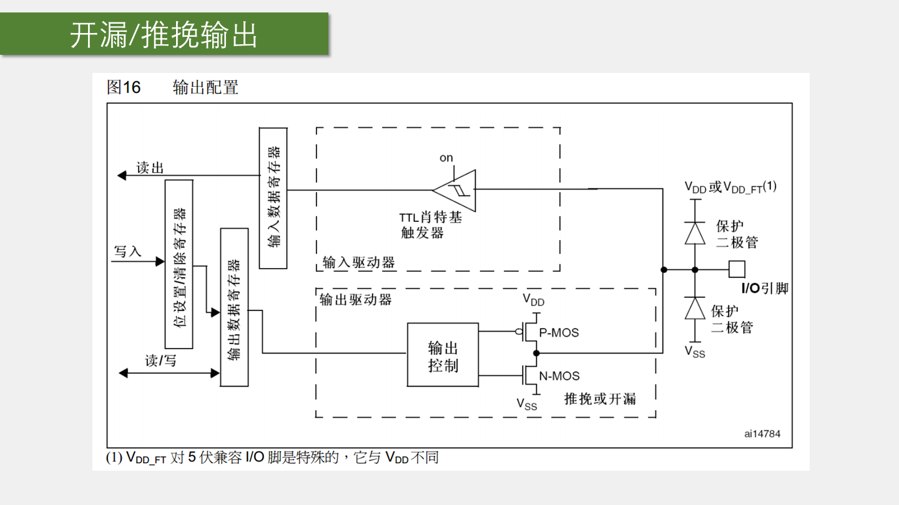
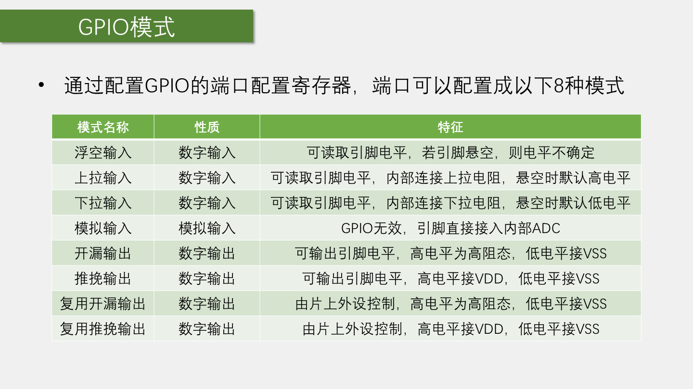

这一课要解决的问题
本课目标
读完你能：画出推挽与开漏的内部电路并说出差别；算出一个 LED 该串多大电阻；用 8 个引脚做出往返跑马灯；说清 HAL 函数和直接写寄存器之间差了什么。
课 2 你点亮了一个灯，用的就是推挽输出。但 Output Push Pull 这个选项到底是什么意思、什么时候必须换成 Open Drain，是面试里问得最勤的一类问题。这一课把它讲到底。
1. 一个引脚内部长什么样
这一节换个讲法：先把 MOS 管这个词忘掉，就当它是个开关。
你的引脚内部，其实只有两个开关，一头一个：
- 上开关：闭合时，把引脚接到 3.3V（电源正极）
- 下开关：闭合时，把引脚接到 GND（电源负极，0V）
这就是全部。所谓"推挽"和"开漏"，区别只在于：这两个开关里，有几个是真正存在的。
那两个"开关"其实是 MOS 管
你在 PPT 第 24 页会看到 P-MOS 和 N-MOS 两个词，它们就是上面说的两个开关，全称"场效应管"（MOSFET）。
它只有三个脚：
- G（栅极）：控制端，相当于开关的"手柄"，但它是用电压控制的，不用手
- S（源极）：电流入口
- D（漏极）：电流出口
G 和 S 之间的电压达到条件，D 和 S 之间就导通；撤掉就断开。和机械开关比，它没有触点、不会磨损、每秒能开关几百万次，而且可以做得极小——一块芯片里能塞几千万个，这也是单片机能把几十个外设做进去的原因。
两种极性正好相反：
| 类型 | 什么时候导通 | 在 GPIO 里的位置 |
|---|---|---|
| N-MOS | 栅极给高电平 | 下管，负责把引脚拉到 GND |
| P-MOS | 栅极电压低于源极（源极接 3.3V） | 上管，负责把引脚接到 3.3V |
所以："推挽" = 上下两个管子都有；"开漏" = 上管（P-MOS）被去掉，只剩 N-MOS。这就是开漏只能拉低、不能拉高的根本原因。

PPT 第 24 页（原课件的图）。读法：图里的 P-MOS 就是上面说的"上开关"，N-MOS 是"下开关"。开漏模式等于把 P-MOS 那一路去掉，只剩 N-MOS。图看不懂不要紧，把下面两张表记住就够了。
1.1 把每种情况列成表
"输出 1" 到底指什么
它指的是你写进输出寄存器的那一位是 1，是一个"软件命令"，不是"引脚上量到的电压"。
对应的代码就是（这两句属于 Core/Src/main.c 主循环里的 USER CODE BEGIN 3 段；本例假设 PA0 已在 CubeMX 里点成 GPIO_Output、推挽，并生成了 MX_GPIO_Init()）：
文件：Core/Src/main.c（main() 的 while (1) 段；完整文件见 4.3 节）
/* Core/Src/main.c —— main() 的 while (1) 内部 */
while (1)
{
/* USER CODE BEGIN 3 */
HAL_GPIO_WritePin(GPIOA, GPIO_PIN_0, GPIO_PIN_SET); // 这就是"输出 1"
HAL_GPIO_WritePin(GPIOA, GPIO_PIN_0, GPIO_PIN_RESET); // 这就是"输出 0"
/* USER CODE END 3 */
}
为什么用 HAL_GPIO_WritePin 而不是 GPIOA->ODR |= (1 << 0)：后者是"读—改—写"三步，主循环里看不出来，但一旦中断里也在改同一个端口的别的脚，返回时主程序可能把中断里的修改覆盖掉。WritePin 内部用的是 BSRR（单次写入），天然没有这个问题，5 节会展开。
这个 1 送进引脚内部之后，开关才按模式动作：
- 推挽：上开关闭合 → 引脚真的变成 3.3V，"输出 1"和"高电平"是一回事
- 开漏：没有上开关，下开关也断开 → "输出 1"只是"我不拉低"，引脚其实悬空，并不等于高电平
图上的"闭合"就是接通（像家里按下开关通电），"断开"就是断开电路。注意两个开关永远不会同时闭合——那样 3.3V 就直接短到 GND 了。
推挽（Push-Pull）：两个开关都有。
| 你写进 ODR 的值 | 上开关 | 下开关 | 引脚电压 | 谁在给引脚供电 |
|---|---|---|---|---|
| 1 | 闭合 | 断开 | 3.3V | 芯片自己（通过上开关） |
| 0 | 断开 | 闭合 | 0V | 芯片自己（通过下开关接到 GND） |
两种状态下，引脚都被芯片牢牢地接到某个电平上。这就是"推挽"这个名字的由来：往上能推到 3.3V，往下能拉到 0V，两个方向都有力气。
开漏（Open-Drain）：上开关根本不存在（内部结构里直接没有那个管子）。
| 你写进 ODR 的值 | 上开关 | 下开关 | 引脚电压 | 谁在给引脚供电 |
|---|---|---|---|---|
| 1 | 不存在 | 断开 | 不确定（悬空） | 没人。除非你外接上拉电阻 |
| 0 | 不存在 | 闭合 | 0V | 芯片自己（把引脚拽到 GND） |
所以开漏的输出级只有一种确定能力：把引脚拉到 0V；它自己不能把引脚推到 3.3V。
用一句话记住
推挽 = 能推能拉；开漏 = 只会往下拉，高电平得靠上拉电阻。
1.2 "高阻态"到底是什么意思
这是最容易卡住的概念。
开漏输出 1 时，上开关不存在，下开关断开。输出级和引脚断开——它既不是 0V，也不是 3.3V，而是"谁都不驱动它"。专业说法叫高阻态（阻抗极高，接近断路）。
注意"高阻"说的是输出级不驱动，不是引脚和芯片彻底断开：输入通路（Schmitt 触发器）仍然接着，所以开漏脚还能把引脚电平读回来；引脚上还有 ESD 保护二极管。
打个比方：推挽像用手牢牢按住开关面板（按到上面或下面）；开漏输出 1 就像松手——面板停在哪儿，取决于弹簧往哪儿弹。
F103 的开漏能用内部上拉吗？
STM32F103 在输出模式下，内部上拉/下拉是关闭的；只有输入模式才能选内部上拉。所以 F103 用开漏输出时，高电平必须由外部上拉电阻（或总线另一端的上拉）提供。
换成 F4 等系列，PUPDR 在输出模式下也有效，可以开内部上拉；但它通常只有 30–50 kΩ，上升沿很慢，I2C 这类场合仍要按总线速率选外部上拉。
亲手验证一次，比看十遍图管用
把 PA0 配成 开漏输出，不接任何外部电路，然后：
- 代码里写
HAL_GPIO_WritePin(GPIOA, GPIO_PIN_0, GPIO_PIN_SET);（输出 1） - 用万用表电压档，红表笔接 PA0，黑表笔接 GND
你会量到一个不确定的值——可能是 0.3V，可能是 1.2V，手靠近时还会变。这就是悬空引脚的电压：它由周围的电荷和干扰决定，不由你决定。
现在把 PA0 旁边接一个 10kΩ 电阻到 3.3V，再量——稳定在 3.3V 了。
这就是"上拉电阻"存在的全部意义：给悬空的引脚一个默认的高电平。
1.3 为什么两个推挽输出不能直接对接
假设你把 PA0 和 PA1 都用推挽，然后用一根线连起来：
- PA0 输出 1 → 引脚被上开关接到 3.3V
- PA1 输出 0 → 引脚被下开关接到 GND
这根线上就形成了 3.3V → PA0上开关 → 导线 → PA1下开关 → GND 的通路。中间没有任何电阻，只有两个开关的导通电阻（各几十欧）。电流可达几十到上百毫安，远超单个 IO 的 25mA 上限，两个 MOS 管一起发热烧毁。
这不是"理论风险"
新手调试时很常见的操作："我把两个脚短接，让它们同步"——如果都是推挽且输出相反，第一次上电就烧。
要短接两个引脚，至少一方必须是开漏（或都加上拉/串联电阻）。这样最坏情况只是"谁拉低谁赢"，没有短路通路。
1.4 开漏的真正价值：线与
现在看开漏最漂亮的用法。
想象一根绳子，10 个人各抓一端：
- 每个人只有两个动作：往下拽 或 松手
- 只要有 1 个人 往下拽，整根绳子就在下面
- 只有 所有人 都松手，绳子才会被顶上的弹簧拉回去
这就是开漏总线（对应 I²C 的 SDA/SCL）：
- 设备输出 0 = 往下拽（把线拉低）
- 设备输出 1 = 松手（不驱动）
- 上拉电阻 = 那根"弹簧"，没人拽时把线拉高
所以总线的电平规则是：任何设备拉低，总线就是低；全部松手，总线才是高。这叫线与（wired-AND）。
为什么推挽做不到这件事
推挽"输出 1"是主动把线接到 3.3V，不是放手。两个设备一个接 3.3V、一个接 GND，就是 1.3 节说的短路。
开漏的高明之处在于："输出 1"被重新定义成了"不干扰别人"。这才让多个设备共享一根线成为可能。
I²C、CAN、1-Wire 全都建立在这个特性上。s13 讲 I²C 时会回来看这一段。
1.5 开漏的第二个用途：电平转换
开漏还有个副作用很值钱：上拉电阻接到几伏，输出高电平就是几伏。
- 上拉接 3.3V → 输出 0V / 3.3V
- 上拉接 5V → 输出 0V / 5V
因为开漏的上管不存在，引脚不会被芯片内部的 3.3V 钳住，所以外部可以把它拉到更高的电压。
推挽做不到：它的上开关直接连芯片内部的 3.3V，输出高只能是 3.3V；如果外面接 5V，5V 会顺着上开关倒灌进芯片。
用 5V 上拉前先查手册
F103 大部分 IO 是 5V 容忍（FT），但模拟输入引脚（如 PA0~PA7 的 ADC 功能）不是，部分供电引脚也不是。具体看数据手册 pinout 表里的 "FT" 标记。
不确定就用 3.3V 上拉，或者加电平转换芯片。
1.6 到底该选哪个
| 场景 | 选择 | 原因 |
|---|---|---|
| 点 LED、驱动数字输入 | 推挽 | 要主动输出高电平 |
| 驱动 MOS 管栅极 | 推挽 | 要快速充放电 |
| I²C / CAN 总线 | 开漏 | 多设备共享，必须线与 |
| 输出 5V 电平 | 开漏 + 5V 上拉 | 推挽会被 3.3V 限制 |
| 多个 IO 短接做"或"逻辑 | 开漏 | 避免短路 |
| 不确定 | 推挽 | 默认最安全，能驱动绝大多数负载 |

PPT 第 21 页：GPIO 的 8 种模式。本课只用"推挽输出"和"开漏输出"两种；输入那四种在 s4 讲。看这张表时只需要确认一件事：输出模式下，它是"推挽"还是"开漏"。
练习 1：三个小判断
(1) 开漏输出 1、外部没接上拉，用万用表量引脚电压，读数是多少？ (2) 开漏输出 0，外部没接上拉，量到多少？ (3) 推挽输出 1，外部强行用一根线接到 GND，会发生什么？
参考答案
(1) 不确定。引脚悬空（高阻），电压由漏电和干扰决定，可能 0.2V 也可能 2V，万用表读数会飘。这正是"输出 1 却不等于高电平"的含义。
(2) 0V。下开关闭合，引脚被硬接到 GND，非常确定。
(3) 危险。上开关闭合，把 3.3V 直接短到 GND，电流受限于 MOS 导通电阻，可能几十 mA。短时间可能只是发热，时间长会烧掉这个 IO，甚至影响整块芯片。正确做法是接一个电阻再短接。
练习 2：判断该用哪种
下面四个场景分别该用推挽还是开漏？ (1) 点亮一个 LED；(2) 和另一个 3.3V 芯片的输入脚相连；(3) 接 I²C 的 OLED 屏；(4) 输出 5V 电平给一个 5V 继电器模块。
参考答案
(1) 推挽。要主动提供电流。 (2) 推挽。对方是纯输入，不会反向驱动，没有短路风险。 (3) 开漏。I²C 是共享总线，必须线与。 (4) 开漏（且上拉到 5V）。这是开漏的另一个经典用途：电平转换。开漏管的耐压通常高于 VDD，把上拉电阻接到 5V，输出高电平就是 5V。如果推挽，最多只能输出 3.3V，而且 5V 会顺着上管倒灌进芯片。
注意：F103 的 IO 是 5V 容忍（FT 引脚），但模拟引脚和部分引脚不是，具体查数据手册的 pinout 表。
2. 一个 GPIO 能出多大电流
这个数字必须记牢，它决定你能不能直接驱动外设。
| 参数 | 数值 | 说明 |
|---|---|---|
| 单个 IO 绝对最大灌/拉电流 | 25 mA | 超过就可能永久损坏 |
| 单个 IO 推荐工作电流 | ≤ 8 mA | 此时 VOL/VOH 才有保证 |
| 所有 IO 电流总和 | ≤ 150 mA | 8 个灯同时全亮要注意 |
| PC13/14/15 | 3 mA、2 MHz | 独立供电域，能力更弱 |
为什么不能直接用 IO 驱动电机/继电器/蜂鸣器
它们的启动电流动辄几十到几百毫安，是 IO 上限的十几倍。直接接上去的结局是：轻则电压被拉垮、单片机复位，重则 MOS 管烧穿。
正确做法是加一级"开关"：三极管、MOS 管或者专用驱动芯片（L298N、TB6612、ULN2003）。GPIO 只负责给控制信号，功率由外部器件出。这条在 s10 驱动直流电机时会再遇到。
3. 限流电阻怎么算
蓝板 PC13 上已经串好了电阻，所以你没操心过。但自己外接 LED 时必须算，否则要么不亮，要么烧 LED 或烧 IO。
一个 LED 的电路就是：3.3V → 电阻 R → LED → GPIO(输出低)。
所以要算的是：当 GPIO 拉低时，这条路上的电流。
- ：供电
- ：LED 正向压降。红色约 1.8
2.0V，蓝/白/绿约 2.83.2V - ：GPIO 输出低时的电压，8mA 下约 0.4V，可以近似当 0
- ：限流电阻
算一遍：红色 LED，想要 5mA
取标准值 220Ω（电流会略小，约 4mA，亮度够）。如果嫌太亮，换 470Ω（约 1.9mA）或 1kΩ（约 0.9mA，微亮但足够当指示灯）。
为什么是"GPIO 拉低"而不是"GPIO 输出高"
因为蓝板这类电路是共阳极接法：LED 正极接 3.3V。电流方向是 3.3V → LED → GPIO → 芯片内部 → GND。
这种接法叫灌电流（sink）。反过来 LED 负极接 GND、正极接 GPIO 叫拉电流（source）。
为什么大家偏爱灌电流？因为 STM32 内部 N-MOS 的导通电阻比 P-MOS 小，灌电流能力通常强于拉电流。所以能灌就灌。
4. 跑马灯：先看 HAL 怎么写
4.1 硬件
蓝板只有 PC13 一个板载 LED。要做跑马灯，需要外接 8 个 LED。接法（共阳极）：
| LED | 正极 | 负极串电阻后接 |
|---|---|---|
| D1 | 3.3V | PA0 |
| D2 | 3.3V | PA1 |
| D3 | 3.3V | PA2 |
| D4 | 3.3V | PA3 |
| D5 | 3.3V | PA4 |
| D6 | 3.3V | PA5 |
| D7 | 3.3V | PA6 |
| D8 | 3.3V | PA7 |
每个串 470Ω。手头 LED 不够也没关系，用 2~3 个也能验证逻辑，把代码里的 LED_NUM 改小即可。
4.2 CubeMX 配置
把 PA0~PA7 全部点成 GPIO_Output，参数照课 2 的设置：
| 配置项 | 值 | 理由 |
|---|---|---|
| GPIO output level | High | 共阳极，高电平 = 灭。初始化全灭，不会一上电就亮一串 |
| GPIO mode | Output Push Pull | 要点亮，必须主动拉低 |
| Pull-up/Pull-down | No pull | 推挽不需要 |
| Maximum output speed | Low | 跑马灯切换频率只有几 Hz，低速最省电磁干扰 |
4.3 代码
按真实工程拆成 5 个文件：gpio.h / gpio.c 由 CubeMX 生成，只管引脚；App/Inc/app_marquee.h + App/Src/app_marquee.c 是自己写的跑马灯业务；Core/Src/main.c 只负责调度。每个文件都是完整内容，可以整份对照。
文件：Core/Inc/gpio.h（CubeMX 生成）
/* Core/Inc/gpio.h */
#ifndef __GPIO_H
#define __GPIO_H
#ifdef __cplusplus
extern "C" {
#endif
#include "main.h"
void MX_GPIO_Init(void);
#ifdef __cplusplus
}
#endif
#endif /* __GPIO_H */
文件：Core/Src/gpio.c（CubeMX 按 4.2 的表生成；8 个脚参数完全一样，可以合并成一次 HAL_GPIO_Init）
/* Core/Src/gpio.c —— PA0~PA7 推挽输出，初始高电平（共阳极 = 全灭） */
#include "gpio.h"
void MX_GPIO_Init(void)
{
GPIO_InitTypeDef GPIO_InitStruct = {0};
__HAL_RCC_GPIOA_CLK_ENABLE(); /* 不开时钟，下面所有写操作都会被丢弃 */
/* 先全部置高，避免初始化过程中闪一串 */
HAL_GPIO_WritePin(GPIOA, GPIO_PIN_0 | GPIO_PIN_1 | GPIO_PIN_2 | GPIO_PIN_3 |
GPIO_PIN_4 | GPIO_PIN_5 | GPIO_PIN_6 | GPIO_PIN_7,
GPIO_PIN_SET);
GPIO_InitStruct.Pin = GPIO_PIN_0 | GPIO_PIN_1 | GPIO_PIN_2 | GPIO_PIN_3
| GPIO_PIN_4 | GPIO_PIN_5 | GPIO_PIN_6 | GPIO_PIN_7;
GPIO_InitStruct.Mode = GPIO_MODE_OUTPUT_PP; /* 推挽：要主动拉低点亮 */
GPIO_InitStruct.Pull = GPIO_NOPULL; /* 推挽不需要上下拉 */
GPIO_InitStruct.Speed = GPIO_SPEED_FREQ_LOW; /* 2MHz，跑马灯几 Hz 足够 */
HAL_GPIO_Init(GPIOA, &GPIO_InitStruct);
}
文件：App/Inc/app_marquee.h（自己写，带 include guard 和参数宏）
/* App/Inc/app_marquee.h —— 单向跑马灯 */
#ifndef __APP_MARQUEE_H
#define __APP_MARQUEE_H
#ifdef __cplusplus
extern "C" {
#endif
#include "main.h" /* 需要 GPIOA、GPIO_PIN_x 这些宏 */
#define LED_NUM 8U /* 灯的数量：硬件不够就改小，但 GPIO 表要同时裁 */
#define LED_STEP_MS 120U /* 每盏灯点亮后保持的毫秒数 */
void App_Marquee_Init(void); /* 全灭 */
void App_Marquee_Task(void); /* 主循环调用一次 = 走完一遍 8 个灯 */
#ifdef __cplusplus
}
#endif
#endif /* __APP_MARQUEE_H */
文件：App/Src/app_marquee.c（业务实现）
/* App/Src/app_marquee.c —— 单向跑马灯 */
#include "app_marquee.h"
/* "第几盏灯" → "哪个引脚"。只读表：const 进 Flash，static 只在本文件可见 */
static const uint16_t led_pin[LED_NUM] = {
GPIO_PIN_0, GPIO_PIN_1, GPIO_PIN_2, GPIO_PIN_3,
GPIO_PIN_4, GPIO_PIN_5, GPIO_PIN_6, GPIO_PIN_7
};
void App_Marquee_Init(void)
{
uint8_t i;
for (i = 0; i < LED_NUM; i++)
{
HAL_GPIO_WritePin(GPIOA, led_pin[i], GPIO_PIN_SET); /* 共阳极：高 = 灭 */
}
}
void App_Marquee_Task(void)
{
uint8_t i;
for (i = 0; i < LED_NUM; i++)
{
HAL_GPIO_WritePin(GPIOA, led_pin[i], GPIO_PIN_RESET); /* 点亮当前灯（低亮） */
HAL_Delay(LED_STEP_MS); /* 亮 120ms */
HAL_GPIO_WritePin(GPIOA, led_pin[i], GPIO_PIN_SET); /* 熄灭，给下一个让位 */
}
}
文件：Core/Src/main.c（SystemClock_Config() 与课 2 完全一致，这里给整份文件）
/* Core/Src/main.c —— 只做初始化和调用 */
#include "main.h"
#include "gpio.h"
#include "app_marquee.h" /* App/Inc 要加进头文件搜索路径，见课 2 的 note */
/* USER CODE BEGIN Includes */
/* USER CODE END Includes */
/* USER CODE BEGIN PV */
/* USER CODE END PV */
void SystemClock_Config(void);
int main(void)
{
/* USER CODE BEGIN 1 */
/* USER CODE END 1 */
HAL_Init(); /* Flash 等待周期 + 1ms SysTick */
SystemClock_Config(); /* 72MHz */
MX_GPIO_Init(); /* PA0~PA7 按 4.2 表配好，初始高电平 */
/* USER CODE BEGIN 2 */
App_Marquee_Init(); /* 再保险一次：全灭 */
/* USER CODE END 2 */
while (1)
{
/* USER CODE BEGIN 3 */
App_Marquee_Task(); /* 业务在 App/ 里 */
/* USER CODE END 3 */
}
}
void SystemClock_Config(void)
{
RCC_OscInitTypeDef RCC_OscInitStruct = {0};
RCC_ClkInitTypeDef RCC_ClkInitStruct = {0};
RCC_OscInitStruct.OscillatorType = RCC_OSCILLATORTYPE_HSE;
RCC_OscInitStruct.HSEState = RCC_HSE_ON;
RCC_OscInitStruct.HSEPredivValue = RCC_HSE_PREDIV_DIV1;
RCC_OscInitStruct.PLL.PLLState = RCC_PLL_ON;
RCC_OscInitStruct.PLL.PLLSource = RCC_PLLSOURCE_HSE;
RCC_OscInitStruct.PLL.PLLMUL = RCC_PLL_MUL9;
if (HAL_RCC_OscConfig(&RCC_OscInitStruct) != HAL_OK)
{
Error_Handler();
}
RCC_ClkInitStruct.ClockType = RCC_CLOCKTYPE_HCLK | RCC_CLOCKTYPE_SYSCLK
| RCC_CLOCKTYPE_PCLK1 | RCC_CLOCKTYPE_PCLK2;
RCC_ClkInitStruct.SYSCLKSource = RCC_SYSCLKSOURCE_PLLCLK;
RCC_ClkInitStruct.AHBCLKDivider = RCC_SYSCLK_DIV1;
RCC_ClkInitStruct.APB1CLKDivider = RCC_HCLK_DIV2;
RCC_ClkInitStruct.APB2CLKDivider = RCC_HCLK_DIV1;
if (HAL_RCC_ClockConfig(&RCC_ClkInitStruct, FLASH_LATENCY_2) != HAL_OK)
{
Error_Handler();
}
}
void Error_Handler(void)
{
__disable_irq();
while (1)
{
}
}
led_pin[] 为什么放在 App/Src/app_marquee.c 里、加 static const：它是一张只读表，const 让编译器把它放进 Flash（不占宝贵的 20KB SRAM），static 让它只在本文件可见，不会和别的文件同名变量打架。放在 App/ 而不是 main.c，是因为"哪个灯对哪个脚"属于跑马灯这个业务模块的私有数据。
led_pin[] 这张表的意义是把"第几个灯"和"哪个引脚"解耦：以后换板子只改表，循环体一个字不动。为什么不用 switch (i) 列 8 个 case——写起来长，改起来更痛，多一个灯就多一个分支；数组查表是 O(1)，代价只有十几个字节 Flash。
为什么不用 GPIOA->ODR = ~(1 << i) 一行搞定：能亮，但要处理"其余 7 个都灭"的取反逻辑，i 超过 7 还会波及别的位，读代码的人也看不出你想干什么。WritePin 把"哪个灯、亮还是灭"直接写在脸上。
哪些没写：MX_GPIO_Init() 里那 8 个脚的配置不在你的代码里，是 CubeMX 按 4.2 的表生成的。这就是分工：引脚配置交给工具，业务逻辑写在你手里。
注意这里用 WritePin 而不是 TogglePin：因为我们明确知道要"亮"还是"灭"，而不是翻转。两个函数的选择原则是——
- 要指定状态 →
WritePin(pin, SET/RESET) - 要切换状态，且不关心当前是什么 →
TogglePin(pin)
为什么这里不是先全灭再点亮
因为上一轮循环结束时已经把自己熄灭了。只有一个灯亮、其余全灭，这样写最省事。
但如果你中途打断（比如调试器暂停后继续），状态可能不对。想保险可以在每次循环开头把 8 个灯全部 SET 一遍——多 8 次函数调用，换来状态绝对可控。这叫幂等初始化，工程上很常用。
5. 往下一层：HAL 函数到底做了什么
HAL_GPIO_WritePin() 在 Drivers/STM32F1xx_HAL_Driver/Src/stm32f1xx_hal_gpio.c 里，函数体就这么短：
文件：Drivers/STM32F1xx_HAL_Driver/Src/stm32f1xx_hal_gpio.c（库源码，不用你写、不要改）
/* HAL_GPIO_WritePin() 的完整实现 */
void HAL_GPIO_WritePin(GPIO_TypeDef *GPIOx, uint16_t GPIO_Pin, GPIO_PinState PinState)
{
if (PinState != GPIO_PIN_RESET) // 只要不是 RESET 就按"置高"处理
GPIOx->BSRR = GPIO_Pin; // 写 BSRR 低 16 位 = 置高
else
GPIOx->BRR = GPIO_Pin; // 写 BRR = 置低
}
判定写成"不等于 RESET"而不是"等于 SET"，是 HAL 的防御式写法：调用方传了非法值也当置高，不会把该亮的灯意外关掉。改成 == GPIO_PIN_SET 功能上看不出差别，语义上弱一档。
为什么不干脆教 GPIOA->BSRR = GPIO_PIN_3; 直接写：当然可以，而且更快（省掉函数调用和分支）。代价是读代码的人得自己记住"BSRR 低 16 位置位、高 16 位复位"，一旦拼错寄存器名（BSR）编译器只报"未定义标识符"，你会以为是芯片不支持这个功能。HAL 用函数名把意图写在表面。快多少、值不值得换，见 5.1 节。
三个寄存器，作用完全不同：
| 寄存器 | 全名 | 写 1 的效果 | 为什么存在 |
|---|---|---|---|
ODR |
Output Data Register | 直接设定 16 个脚的电平 | 读-改-写，会覆盖其他脚 |
BSRR |
Bit Set/Reset Register | 低 16 位置高，高 16 位置低 | 原子操作，不影响其他位 |
BRR |
Bit Reset Register | 置低 | BSRR 的补充，老代码常用 |
深挖：为什么不用 ODR
GPIOA->ODR |= (1 << 3) 是三步：读 ODR → 或上 bit3 → 写回。
如果这时候来一个中断，中断里也改了 ODR 的另一个位，中断返回后主程序把旧的值写回去——中断里的修改就丢了。这叫读-改-写竞态。
BSRR 是单次写入，硬件直接按位操作，不存在读的阶段，天然原子。所以 HAL 用它。这是"为什么嵌入式代码偏爱位设置寄存器"的标准答案，面试常问。
想亲手验证，在调试器里把表达式换成 GPIOA->ODR，单步执行 WritePin，看着某一位翻转——这比读十遍文档管用。
5.1 直接写寄存器有多快
调用 HAL_GPIO_WritePin 要经过函数调用、参数检查、分支判断，在 72MHz 下大约几十个时钟周期。
如果直接写 GPIOA->BSRR = GPIO_PIN_0;，编译出来是一条 STR 指令，1~2 个周期。
在 8 个灯、120ms 间隔的场景里，这个差别毫秒级，完全无感。但在高速场景（比如软件模拟 SPI 要翻转时钟到 MHz 级），HAL 函数就太慢了，必须直接写寄存器或者用硬件外设。
关键结论
这就是"会用库"和"懂单片机"的分界线： 能用库函数把功能做出来是一层；知道库函数底下写了哪个寄存器、为什么这么写，是另一层。 面试官最爱问后者，因为前者查文档就会。
6. 动手项目
动手项目
往返跑马灯（Knight Rider 效果）
要求：8 个灯从左到右依次点亮，到最右边后再反向从右到左，来回循环，像霹雳游侠车头的扫描灯。
验收标准：
- 最左和最右的灯各只亮一次，不会在两端"卡住"或"跳变"。
- 每次只有一个灯亮。
- 用调试器暂停时，
GPIOA->ODR的低 8 位里有且只有一位是 0。
提示：正向遍历 i 从 0 到 7，反向遍历 i 从 6 到 1（不是 7 到 0，否则两端会重复亮）。
想挑战的话：把"点亮一个灯"改成"点亮一段 3 个灯的拖尾"，用 for 循环处理边界。
文件放置表：
| 文件 | 文件夹 | 作用 |
|---|---|---|
main.h |
Core/Inc/ |
CubeMX 总头文件 |
gpio.h / gpio.c |
Core/Inc/ / Core/Src/ |
PA0~PA7 推挽输出初始化（CubeMX 生成） |
app_marquee.h |
App/Inc/ |
往返跑马灯接口：宏、函数声明 |
app_marquee.c |
App/Src/ |
往返逻辑：正向 0→7、反向 6→1 |
main.c |
Core/Src/ |
只做初始化 + 调用 App_Marquee_Task() |
一、头文件
文件：Core/Inc/main.h
/* Core/Inc/main.h —— CubeMX 生成 */
#ifndef __MAIN_H
#define __MAIN_H
#ifdef __cplusplus
extern "C" {
#endif
#include "stm32f1xx_hal.h"
void Error_Handler(void);
#ifdef __cplusplus
}
#endif
#endif /* __MAIN_H */
文件：Core/Inc/gpio.h
/* Core/Inc/gpio.h —— CubeMX 生成 */
#ifndef __GPIO_H
#define __GPIO_H
#ifdef __cplusplus
extern "C" {
#endif
#include "main.h"
void MX_GPIO_Init(void);
#ifdef __cplusplus
}
#endif
#endif /* __GPIO_H */
文件：App/Inc/app_marquee.h
/* App/Inc/app_marquee.h —— 往返跑马灯 */
#ifndef __APP_MARQUEE_H
#define __APP_MARQUEE_H
#ifdef __cplusplus
extern "C" {
#endif
#include "main.h"
#define LED_NUM 8U /* 灯的数量 */
#define LED_STEP_MS 120U /* 每盏灯亮的毫秒数；调小扫描更快 */
void App_Marquee_Init(void); /* 8 个灯全灭 */
void App_Marquee_Task(void); /* 调用一次 = 跑完"去 + 回"一整趟 */
#ifdef __cplusplus
}
#endif
#endif /* __APP_MARQUEE_H */
二、驱动 .c
文件：Core/Src/gpio.c（CubeMX 生成）
/* Core/Src/gpio.c —— PA0~PA7 推挽输出，初始高电平 */
#include "gpio.h"
void MX_GPIO_Init(void)
{
GPIO_InitTypeDef GPIO_InitStruct = {0};
__HAL_RCC_GPIOA_CLK_ENABLE();
HAL_GPIO_WritePin(GPIOA, GPIO_PIN_0 | GPIO_PIN_1 | GPIO_PIN_2 | GPIO_PIN_3 |
GPIO_PIN_4 | GPIO_PIN_5 | GPIO_PIN_6 | GPIO_PIN_7,
GPIO_PIN_SET);
GPIO_InitStruct.Pin = GPIO_PIN_0 | GPIO_PIN_1 | GPIO_PIN_2 | GPIO_PIN_3
| GPIO_PIN_4 | GPIO_PIN_5 | GPIO_PIN_6 | GPIO_PIN_7;
GPIO_InitStruct.Mode = GPIO_MODE_OUTPUT_PP;
GPIO_InitStruct.Pull = GPIO_NOPULL;
GPIO_InitStruct.Speed = GPIO_SPEED_FREQ_LOW;
HAL_GPIO_Init(GPIOA, &GPIO_InitStruct);
}
文件：App/Src/app_marquee.c（往返逻辑全在这里）
/* App/Src/app_marquee.c —— 往返跑马灯 */
#include "app_marquee.h"
static const uint16_t led_pin[LED_NUM] = {
GPIO_PIN_0, GPIO_PIN_1, GPIO_PIN_2, GPIO_PIN_3,
GPIO_PIN_4, GPIO_PIN_5, GPIO_PIN_6, GPIO_PIN_7
};
/* 私有小函数：点亮第 idx 盏，保持 LED_STEP_MS，再熄灭 */
static void Led_Show(uint8_t idx)
{
HAL_GPIO_WritePin(GPIOA, led_pin[idx], GPIO_PIN_RESET); /* 低电平点亮 */
HAL_Delay(LED_STEP_MS);
HAL_GPIO_WritePin(GPIOA, led_pin[idx], GPIO_PIN_SET); /* 灭 */
}
void App_Marquee_Init(void)
{
uint8_t i;
for (i = 0; i < LED_NUM; i++)
{
HAL_GPIO_WritePin(GPIOA, led_pin[i], GPIO_PIN_SET); /* 全灭 */
}
}
void App_Marquee_Task(void)
{
uint8_t i;
/* 正向：0 → 7，最右的 7 在这里亮一次 */
for (i = 0; i < LED_NUM; i++)
{
Led_Show(i);
}
/* 反向：LED_NUM-2 → 1，即 6 → 1；7 和 0 刚才已经亮过，不再重复 */
for (i = LED_NUM - 2; i > 0; i--)
{
Led_Show(i);
}
}
三、main.c
文件：Core/Src/main.c
/* Core/Src/main.c —— 入口：初始化 + 调度 */
#include "main.h"
#include "gpio.h"
#include "app_marquee.h"
/* USER CODE BEGIN Includes */
/* USER CODE END Includes */
/* USER CODE BEGIN PV */
/* USER CODE END PV */
void SystemClock_Config(void);
int main(void)
{
/* USER CODE BEGIN 1 */
/* USER CODE END 1 */
HAL_Init();
SystemClock_Config();
MX_GPIO_Init();
/* USER CODE BEGIN 2 */
App_Marquee_Init();
/* USER CODE END 2 */
while (1)
{
/* USER CODE BEGIN 3 */
App_Marquee_Task();
/* USER CODE END 3 */
}
}
void SystemClock_Config(void)
{
RCC_OscInitTypeDef RCC_OscInitStruct = {0};
RCC_ClkInitTypeDef RCC_ClkInitStruct = {0};
RCC_OscInitStruct.OscillatorType = RCC_OSCILLATORTYPE_HSE;
RCC_OscInitStruct.HSEState = RCC_HSE_ON;
RCC_OscInitStruct.HSEPredivValue = RCC_HSE_PREDIV_DIV1;
RCC_OscInitStruct.PLL.PLLState = RCC_PLL_ON;
RCC_OscInitStruct.PLL.PLLSource = RCC_PLLSOURCE_HSE;
RCC_OscInitStruct.PLL.PLLMUL = RCC_PLL_MUL9;
if (HAL_RCC_OscConfig(&RCC_OscInitStruct) != HAL_OK)
{
Error_Handler();
}
RCC_ClkInitStruct.ClockType = RCC_CLOCKTYPE_HCLK | RCC_CLOCKTYPE_SYSCLK
| RCC_CLOCKTYPE_PCLK1 | RCC_CLOCKTYPE_PCLK2;
RCC_ClkInitStruct.SYSCLKSource = RCC_SYSCLKSOURCE_PLLCLK;
RCC_ClkInitStruct.AHBCLKDivider = RCC_SYSCLK_DIV1;
RCC_ClkInitStruct.APB1CLKDivider = RCC_HCLK_DIV2;
RCC_ClkInitStruct.APB2CLKDivider = RCC_HCLK_DIV1;
if (HAL_RCC_ClockConfig(&RCC_ClkInitStruct, FLASH_LATENCY_2) != HAL_OK)
{
Error_Handler();
}
}
void Error_Handler(void)
{
__disable_irq();
while (1)
{
}
}
为什么反向是 LED_NUM - 2 到 1：正向循环结束时，7 号灯刚亮完熄灭，0 号灯在本轮开头也亮过。此刻如果从 7 再往 0 走，7 会连续亮两次（上一轮末尾 + 本轮开头），两端就会"卡一下"。从 6 走到 1，正好接上"7 亮完 → 回 6"，两端各只亮一次。
为什么抽一个 Led_Show()：正向和反向都要"点亮—延时—熄灭"这三句，抽成函数只写一次；这也是以后加拖尾效果的唯一改动点。
为什么不用 for (i = 7; i >= 0; i--)：i 是 uint8_t，减到 0 后再减 1 会回绕成 255，条件 i >= 0 永远成立——死循环。这是 C 里最经典的坑之一，所以反向循环用 i > 0 且从 LED_NUM - 2 起。
哪些没写：8 个脚的初始化由 CubeMX 生成（gpio.c），main.c 里没有一行点灯代码；这些都换到 App/ 和 Core/ 各自的文件里，重新生成代码也不会丢。
验收对照：调试器里把 GPIOA->ODR 加进 Live Expressions，暂停时低 8 位应只有一个 0（其余为 1），例如 0xFF7F 表示 PA7 正亮着。
练习 3：算电阻和电流
用 3.3V 供电、蓝色 LED（小电流下 约 2.7–2.8V，批次有差异）、串 220Ω 电阻，电流大约是多少？这个电流对 GPIO 安全吗？如果换成 100Ω 呢？
参考答案
按 、忽略 GPIO 压降估算：
能微亮，但余量很小：如果这颗 LED 的 偏高到 3.1V，电流只剩不到 1mA，看起来就会很暗。
换成 100Ω：
会亮一些，但仍受 分散和温度影响。
结论：3.3V 能点亮蓝/白 LED，但亮度低、批次差异大；要稳定亮度，用 5V 串电阻、恒流驱动或升压恒流。选 LED 时先看 和测试电流，这是很多人接线失败的真实原因。
7. 本课小结
- 推挽 = 上下管都工作，能主动输出高低；开漏 = 只有下管，高电平靠外部上拉。
- 共享总线必须开漏，否则两个设备一个输出高一个输出低就是短路。
- 单 IO 绝对上限 25mA，推荐 ≤ 8mA；电机继电器必须外加驱动。
- 限流电阻 ，注意 LED 的 可能大于 3.3V。
- 蓝板 LED 是共阳极，低电平点亮，属于灌电流。
BSRR是原子置位，ODR是读-改-写有竞态，HAL 用 BSRR。- HAL 函数与直接写寄存器差几十个时钟周期，高速场景必须下沉到寄存器。
自检
- 我能画出推挽和开漏的内部结构，说出上管的差别
- 我能解释 I²C 为什么必须开漏，不这么做的后果是什么
- 我能算出一个红色 LED 串 470Ω 时的电流
- 我知道单个 IO 的安全电流范围
- 我能说出 BSRR 比 ODR 好在哪
- 我知道为什么 PC13 不能驱动蜂鸣器
下一课预告：s4 GPIO 输入：上下拉、浮空与按键消抖。你会知道为什么"什么都不接"的输入脚会疯狂乱跳，为什么按键几乎总配上拉，以及怎么用 20ms 消抖把一个抖成十几个脉冲的按键变成一次干净的触发。